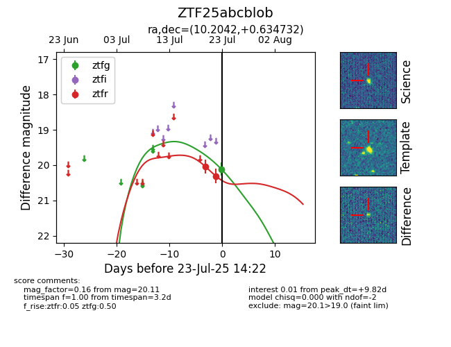

Target ZTF25abcblob at 2025-07-23 14:22, see:
FINK: fink-portal.org/ZTF25abcblob
Lasair: lasair-ztf.lsst.ac.uk/objects/ZTF25abcblob
ALeRCE: alerce.online/object/ZTF25abcblob
alt names
ZTF25abcblob (ztf,fink)
coordinates:
equatorial (ra, dec) = (10.2042,+0.63473)
galactic (l, b) = (117.2468,-62.11972)
photometry
last ztfg=20.11, ztfr=20.31
1 ztfg, 2 ztfr detections
